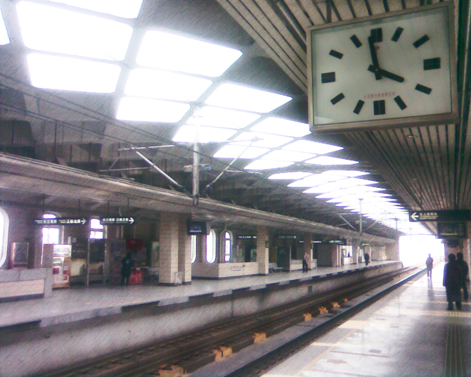

朦朦胧胧中，车子就开进了上海地界。
早些时候我说过我还不想写上海。原因是这样的：这个地方我至少要呆四年。设若只是一个我匆匆玩过的地方，比方说西塘，比方说杭州苏州，那我大可信口开河肆无忌惮。
而上海却是要硬生生地占有我人生中的那么大百分比的一段光阴，甚至我的信仰观念，我也只能哑声不语。
隔壁的老兄爬起来去厕所抽烟，这是他从昨晚到现在抽的第四支烟。加上再边上的那位在嘉兴下了车，我右边一下子全空出来了。
我的第一反应，居然不是终于可以翻身了可以伸腿了没有人挤我了。
窗。
晨间灰暗的光亮这时毫无阻挡地漆在我全身。我几乎没有睡着的一觉过去，就从汕头到了上海。
矮房夹杂零散树丛早间。困在一辆纯色巴士外的。有点脏的白色。
窗檐框着朴素的色彩轻声流过窗口。我侧过身歪着头，突然想调皮地笑起来了。
两耳交错Daniel Powter和coldplay几张专辑混在一起已不知彼我。那犹然与我不在同一个世界的钢琴赌气的爵士鼓点和天亮。
于是我毫无防备地想到了那个桥段。初到东京的少女。四周纯白的墙壁。她慵懒地侧卧下。白色外套裹住背影。打量正前方落地窗外耀眼的光亮。一样的纯白。
好像标准的16：9的画幅。眼前的一切淡然若虚，不紧不慢地一页页卷过。我身在戏中，不忍挣扎。
呼吸着车厢内令人难堪的空气。上了高架。建筑慢慢地拔高起来。
远远看去。南站。我默默数着。然后徐家汇。上海体育馆。突然间感觉窗内外似乎有一样的温意。
数啊数。接下去，就是南京路（吴江路？），外滩了吧？
霎时很久以前说关于上海的很多话涌入脑海。我开始会记地名了。嘿。
然后周末去拿回我送去修理的宝贝键盘。走出轻轨站时，眼前一片宽敞。
果然半年来没多大变化呢。

回来时，踏上站台。半年不见的龙漕路站，一般的空旷。那时我反反复复来了好几次喔。也许只有世界和你，能让我这般没有理智。
陪你任性。
去年的梁静茹上海演唱会，他们说：心碎而甜蜜。小事却永恒。一秒就一生。——若不是这样，那什么是我爱你？
从二餐吃过饭，撑伞回寝室。这阴雨还要持续很多天。好像不管在哪里，杂志摊总是很能吸引我驻足的一个地方。也不会让我去物是人非。
我曾度过许多个美妙的夏天。
可是已经晚了晚了。我只愿能站在这杂志堆前，手拿一把破破的雨伞。任外面是风雨山崩，或者人心涣散。然后我们所有所有人一齐一齐老去，似乎不会带着痛苦